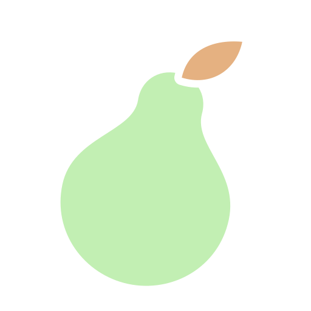

Numbers over adjectives
Say 50 Hz, 58 ms, stale 1.2 s. Never "fast", "laggy" or "offline". A measurement is a promise we can keep.
Pear turns the Apple devices a player already owns into one spatial input. AirPods read where you look, an iPhone reads how you move and touch, an Apple Watch reads your pulse and wrist. Creators build the games in Pear Studio.
Pear is a platform for games that read the whole player. Every device, real or simulated, speaks one input format into one shared 3D world, so a game never has to know which device moved. Games are published to the cloud like any other; the sensor data never leaves the room.
Say 50 Hz, 58 ms, stale 1.2 s. Never "fast", "laggy" or "offline". A measurement is a promise we can keep.
Name a device by what it senses: head pose, motion, touch, heart rate. The player brings the hardware; we make it matter.
An error names what happened and the one thing to do next, with no apology and no blame.
| Write | Not |
|---|---|
| AirPods stream head pose at 50 Hz. | Blazing-fast, ultra-immersive head tracking! |
| Lantern Hunt reads heart rate (Tier 3), and no connected device provides it. Connect a Watch. | Oops! Something went wrong. |
| Calibrate. Then: Calibrated. | Let's get you all set up! |
| Publish version 4 | Ship it |
deviceId, slot, Simulator, Live devices, Tier 1 to 3.Five colors carry the brand. Ten more are mixed from them only where text needs contrast the five cannot give. Click any swatch to copy its hex value.
Fraunces at 37 px
Geist at 16 px. AirPods stream head pose at 50 Hz, and the Watch reports heart rate once a second.
0.00: 1
Rows are text, columns are grounds. Select a cell to load it into the tester.
Fraunces sets anything worth reading aloud. Geist carries the interface and the body. Geist Mono is only for code, ids and measurements.
Display and headlines, 28 px and up. Weight 600, soft terminals on (SOFT 100). The leaning WONK alternates only at 48 px and up.
Body, labels, buttons and tables. Weights 400, 500 and 600. Tabular figures wherever numbers line up.
JSON, scripts, deviceId values and readings like 100 Hz. Never as decoration.
The mark is a single pear, tilted 12 degrees, with the leaf set off by a thin cut. The name is Fraunces 600. Use the mark on its own at small sizes.

Recolor the leaf
Change the tilt
Set it on Tea, Sandy or Powder
Stretch or squash it
Components read semantic tokens, so one set of styles serves both themes. Click a token to copy it. Switch the kit theme at the top to see Paper.
| Token | Emerald | Paper | Use |
|---|
cubic-bezier(0.16, 1, 0.3, 1)Find the lanterns by sound. Your heartbeat sets how fast the dark moves.
New versionAirPodsWatch
Watch stale for 1.2 s. Heart rate is held at 96 bpm until it reconnects.
Sensor data stays on your network. Only the game itself is published. How Pear handles data
Edit the words once and every template updates. Downloads embed Fraunces and Geist, so the files look the same on any machine.
Pear is a platform for games that use every Apple device a player carries. AirPods head pose, iPhone motion and touch, and Apple Watch heart rate and wrist gestures stream as one standard input format into a shared 3D world. Creators build and test games in Pear Studio, with a built-in simulator for devices they do not own, and publish them to the cloud. Sensor data stays on the player's local network.